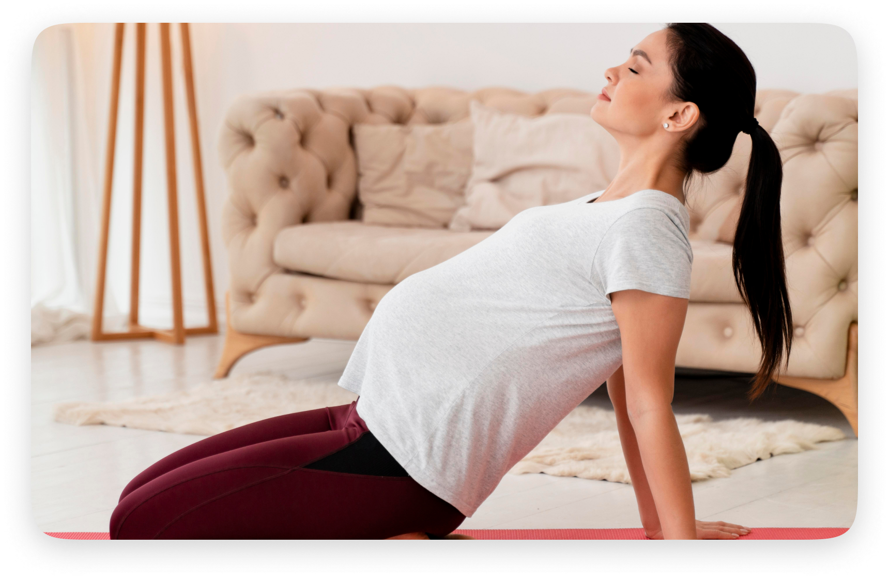
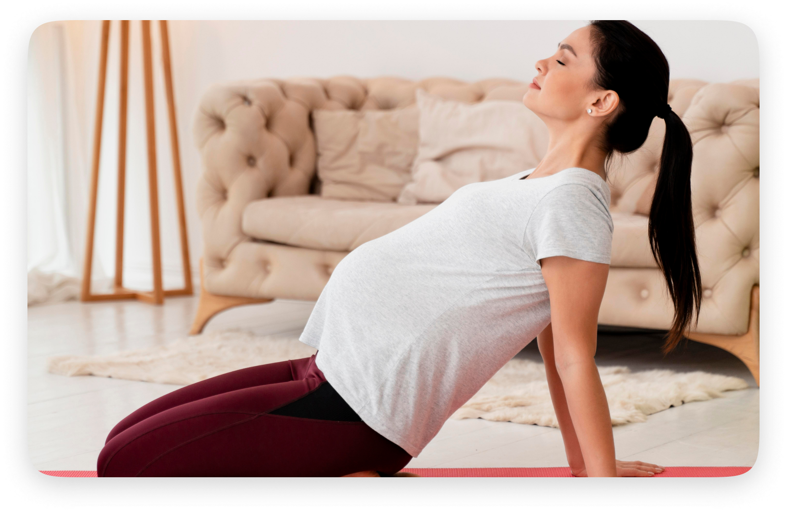

Experience Quality Maternity Care @ Rashtrotthana Hospital and best in Normal Delivery
Rashtrotthana Hospital offers the JANANI SAMRIDDHI package, a high-quality,
all-inclusive maternity service. Our team of experienced gynecologists is available 24/7 to ensure prompt
care in any emergency, prioritizing the safety and well-being of both mother and child.
Renowned Gynaecologist For Safe & Normal Deliveries Now Available at Rashtrotthana
Hospital at just Rs. 50,000*
In addition to exceptional medical care, we offer Holistic Yoga Programs for
Expecting and New Mothers. Our specialized Antenatal & Postnatal Yoga sessions are designed to
empower your body and mind through every stage of pregnancy and postnatal care. Whether you're preparing for
birth or focusing on postnatal wellness, our programs support you in staying healthy, flexible and relaxed.
Experience the journey of motherhood with confidence and care at Rashtrotthana
Hospital, where your comfort and health are our top priorities.
Mathruswasthyam Lokaswasthyam
At Rashtrotthana Hospital, we stand out for our holistic approach to maternity care,
combining cutting-edge medical practices with personalized, compassionate attention. Our team of renowned
specialists, including obstetricians, yoga practitioners and Ayurvedic experts, ensures that every aspect of
your pregnancy journey is covered - from high-risk pregnancies to postnatal recovery. We prioritize both
physical and emotional well-being through our integrated services, such as antenatal yoga and Ayurvedic
postnatal care, offering mothers and babies a nurturing environment throughout their experience. With
round-the-clock care, state-of-the-art facilities and a commitment to patient-centered service, we provide
exceptional care that supports both the health of the mother and the development of the child.
Our Expertise in Maternity Care Includes:
- Vaginal Delivery
- High-Risk Pregnancy Management
- Diabetes & Pregnancy
- Medical Disorders in Pregnancy
- Recurrent Pregnancy Loss Treatment
- Emergency Obstetric Care
- Vaginal Surgeries
We understand the importance of personalized attention during pregnancy and our
team of highly qualified doctors is dedicated to providing the best care throughout this journey.
Integrated Maternity Packages
Starting from the 3rd month of pregnancy, our Integrated Maternity Care Packages offer
a comprehensive approach to maternal health, ensuring you receive complete support for a healthy pregnancy and
postpartum recovery.
-
Yoga for Expecting Mothers: Tailored sessions to improve digestion, mood, flexibility and reduce
pregnancy-related discomforts like stress and anxiety.
-
Post-Delivery Home Care Package (Ayurvedic Treatment): A specialized postpartum care package designed to
help you recover fully and regain your strength after delivery.
Antenatal and postnatal yoga offer numerous benefits for both expecting and new
mothers. Antenatal yoga helps improve physical strength and flexibility, which can ease common pregnancy
discomforts such as back pain, swelling and fatigue. It also promotes relaxation, which may help reduce stress and
anxiety during pregnancy. Regular practice can enhance breath control, which is beneficial during labor. Postnatal
yoga focuses on recovery, helping to restore core strength, improve posture and support mental well-being after
childbirth. It also aids in managing stress and improving energy levels, which are essential during the postnatal
period. Additionally, both antenatal and postnatal yoga can foster a sense of community, allowing mothers to
connect and share experiences with others going through similar stages of motherhood.


 
